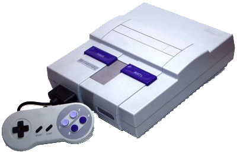
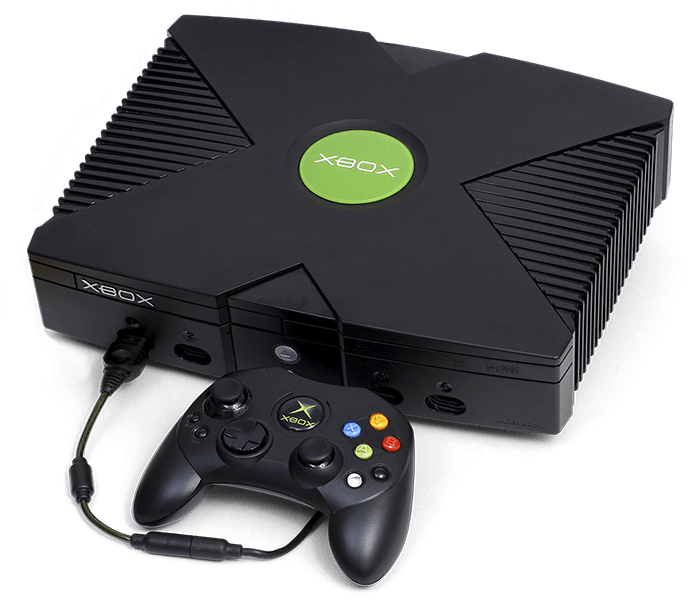

Nintendo Entertainment System (también conocida como NES o en Japón conocida como "FAMICOM") es la segunda consola de sobremesa de Nintendo, y es una videoconsola de ocho bits perteneciente a la tercera generación en la industria de los videojuegos.
Nintendo Entertainment System (también conocida como NES o en Japón conocida como "FAMICOM") es la segunda consola de sobremesa de Nintendo, y es una videoconsola de ocho bits perteneciente a la tercera generación en la industria de los videojuegos.
La Super Nintendo Entertainment System, conocida popularmente como la Super Nintendo, también llamada la Super Famicom (japonés: スーパーファミコン, Hepburn: Sūpā Famikon) en Japón (abreviada SFC) y la Hyundai Super Comboy (hangul: 현대 슈퍼 컴보이, romanización revisada: Hyeondae Syupeo Keomboi) en Corea del Sur (también nombrada oficialmente de forma abreviada como la Super NES o SNES en América y como la Super Nintendo en Europa), es la tercera videoconsola de sobremesa de Nintendo y la sucesora de Nintendo Entertainment System (NES) en América y Europa. Mantuvo una gran rivalidad en todo el mundo con la Sega Mega Drive (o Sega Genesis) durante la era de 16 bits.
PlayStation (プレイステーション Pureisutēshon, oficialmente abreviada como PS1) es una videoconsola de sobremesa de 32 bits lanzada por Sony Computer Entertainment el 3 de diciembre de 1994 en Japón. Se considera la videoconsola más exitosa de la quinta generación tanto en ventas como en popularidad. Además de la original, en el año 2000 se lanzó la PSone (también llamado modelo slim).
Xbox, o también llamada Xbox Clásica, Xbox Original y/o Primer Xbox . Es una videoconsola de sobremesa de sexta generación producida por Microsoft y la primera de esta empresa, en colaboración con Intel. Su principal característica es su procesador central basado en el procesador Intel Pentium III.
